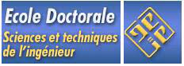

Applied Bachelor's Degree
Higher Institute of Technological Studies of Mahdia "ISETM" : 09/17 ==> 05/18
Higher Institute of Technological Studies of Nabeul "ISETN" : 09/18 ==> 07/20
The major of this Applied Engineering Bachelor's Degree Program is Electrical Engineering.
The specialty that I chose was Industrial Electricity.

You might be wondering why I have invoked 2 schools, well it is for the simple reason that I jumped ship from the one in Mahdia to Nabeul. In fact, you can follow the following story so you can comprehend it better. So, after obtaining my baccalaureate, my score was in some capacity insufficient to get me to closer schools, so I was in a tight spot. Thus, I had to pack my bags and go away from my family which was a great way to educate myself on how to depend on myself, and assume responsibility instead of leaning on the family that provides me with everything, for which I am eternally thankful for.
The academic year has just begun and I was really having a hard time due to the shift in major as I came from a Mathematical Baccalaureate background, whereas I found myself now studying Electrical Engineering, which I had no clue about, nor have I studied it before. Nevertheless, I persevered, adapted, and overcame all the hurdles, and I found myself valedictorian over the entire school in the Department of Electrical Engineering. Yes, I did what was truly unthinkable and sometimes seemed impossible to adjust. Yet, I would be lying if I didn't acknowledge some colleagues who helped me with open arms, every time I had difficulties and I asked, they were there for me. Going back to the valedictorian stuff, since I squashed the opposition by a mile, and I wanted to go back to my loved ones, we have a stipulation if you want to swap between schools while you maintain the same major, you can file in a request of the chosen school that you want to get transferred to.
A couple of months later, my request was approved, and I got admitted to the much closer and higher-ranked school in the network of technological studies. And like they say, when one door closes, another one opens. Yet, I find myself in the lion's den, with one individual with such a bad reputation, as the others call him the devil. Well, it appeared that this person was this institute's last year valedictorian. When we met in person, it was a frozen day in hell when he told us all about it, as I got to know he did some digging on me, why he acts like acts is because he wants to be the valedictorian this year too. Thus, the least that I could say that I had my work was already cut out for me. I had to stand him for 2 years, for the scam, conniving, heinous person that he is pandering to teachers to grant him higher grades. Such a pathetic excuse for a student. Eventually, the nightmare came to an end after I outsmarted and unstudied him, as I got to be the valedictorian that year, and closed the door on his hopes and dreams next year as well. In normal circumstances, I am not proud of being the bad guy, but in this particular scenario, my oh my how it felt so good to shatter his confidence and put this rivalry to bed because it was him all along who fired the first shot and started his heinous cheap shots to undermine me in front of the class.
Bachelor's Degree
National Engineering School of Tunis "ENIT", part of University of Tunis El Manar "UTM"
The major of this Engineering Bachelor's Degree Program is Electrical Engineering.
The specialty that I chose was Automation and Industrial Computing.
After I endured a journey that can only be described as an intense, competitive, and high stakes high reward kind of program, I culminated it with my hand raised in victory as I became valedictorian 3 times each year, overcoming adversity, through the ups and downs with diligence, determination and perseverance. There is this one thing that I didn't tell you, which is that we have this stipulation if you were ranked as valedictorian in those 3 years, you truly get to pursue your engineering studies in one of the elitist and prestigious public schools in the country. So, when the results were in, I filed my request with my choices, and now, all I had to do was wait while facing the unknown, looking for what the future would hold for me after such success.
Master's Degree
Doctoral School for Sciences and Technical engineering "EDSTI", part of University of Tunis El Manar "UTM"
The major of this Research Master's Degree is Automation.

Even though I accomplished an outstanding milestone by graduating as an Engineer, I didn't want to be there just to be there, if you know what I'm saying, I am here to hit a home run, I wasn't satisfied since I want to have the prestigious PHD status. I want to be recognized as one of the greats, cement a legacy that I can be proud of, to actually say that I truly made it. Therefore, the most reasonable phase to attain this goal is undergoing a Research Master's Degree. Even though when I decided to pursue such a degree, I was actually in my third and final year in terms of engineering studies. So, I had to pull double duty from that point on moving forward up until I sat for the exams in January to finalize my official engineering studies and Research studies, which will eventually mark the beginning of the internship for my end-of-study project.
- © Copyright 2024 Ouday BOUASKER